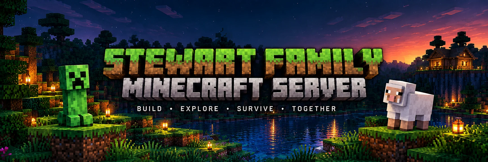

Java Edition
for PC, Mac, and Linux
playmc.stewnet.comPort: 25565
PrivateWhitelist required
How to connect (Java)
Step-by-step guide
Java & Bedrock
Explore our world
Helpful commands
for PC, Mac, and Linux
playmc.stewnet.comPort: 25565
PrivateWhitelist required
How to connect (Java)for Xbox, PlayStation, Switch,
mobile, and Windows
playmc.stewnet.comPort: 19132
PrivateWhitelist required
How to connect (Bedrock)See our builds, explore, and find your way around.
Open world map ↗